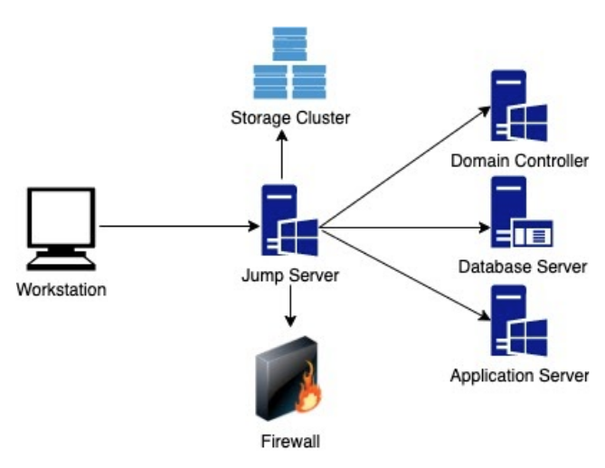

Overview of role based access control & least privilege best practice
Objective
- Outline guidance and approach to best practice design features for Role Based Access Control (RBAC) and using the principle of Least Privilege in Local Authority Information Systems.
But don’t we already do this?
A sizeable percentage of organisations who believe they already have RBAC in place actually don’t.
They have regular user accounts, and then they have a handful of users who also have ‘Domain Administrator’ level accounts.
This will give these users permissions they need to do administrative tasks, yes. However, it also gives them permissions to systems that they don’t need to.
Least Privilege is not being followed in this scenario.
What is role based access control?

Best practices
Best practices for RBAC include but are not limited to:
Total separation of privileged roles from regular user accounts
Specific roles for specific tasks, e.g.
User administration role
Database server privileged accounts
Maintenance accounts (for tasks such as TX log backups, Maintenance plans)
Individual DBA accounts
Administration accounts (for entire SQL instance management)
Backup and restore role
Domain administration role
Messaging (email) administration role
Create privileged user accounts for each user for each role defined.
For instance a user may manage user accounts as well as backup systems. In a RBAC configuration they will have 3 accounts - a regular user, a user administration account and an account for backups.
Work on the principle of least privilege - which means giving a user account or process only those privileges which are essential to perform its intended function and nothing more.
Aggregated Roles
In smaller IT teams splitting the roles out in a very specific manner might not be the best way to do things, but there is still the need to reduce the scope of administrative accounts to reduce any potential attack surface.
In circumstances like these you may wish to amalgamate similar roles together (eg SQL Administrators and Oracle Administrators), but keep them separate from email administrators or General User Administration.
Follow the ‘spirit’ of separation of duties wherever possible, but in a way which minimises crossover between distinctly different roles without creating a large number of accounts per user.
Utilise a ‘Jump Server’ for connections to privileged servers.
A jump server is essentially a server that exists for you to make a connection to before you then connect to the privileged destination server or has the management tools on it that you require to carry out an administrative task.
Multiple Jump Servers (possible in an RDS Collection) prevent a single point of failure and give greater access.
They add to your privileged server’s security by blocking RDP access to everything apart from the jump server’s IP address.
Requiring MFA on the privileged account used to connect to the jump server will enhance security even further.

Both RBAC and least privilege are the foundations of Privileged Access Management (PAM):
PAM provides many benefits, namely:
It will make it more difficult for an attacker to pivot into critical services, from an already compromised management access workstation.
It will introduce an additional source of auditing, making it easier to identify misuse of administration interfaces. This will act as a strong deterrent against the insider threat, where a legitimate system administrator may consider abusing their access.
It will introduce additional guard rails to help system administrators. They will hold less responsibility to protect their access credentials. It will help protect them from accidentally making unintended changes.
https://www.ncsc.gov.uk/collection/secure-system-administration/use-privileged-access-management
Why are these practices important?
Access Control:
- A user in a specific role will not have access to systems they should not have access to.
Mobility:
- If a user changes jobs within your organisation, they can simply be removed from or added to the relevant Role.
Reduce Risk:
- If an account is compromised, the exposure to the organisation is reduced.
Even when you implement RBAC you should regularly review the members of the roles to ensure that the permissions are only given to valid users.
Remember to manage your risk
Establish effective account management processes
Establish policies and standards for user authentication and access control
Limit user privileges
Limit the number and use of privileged accounts
Monitor
Limit access to the audit system and the system activity logs
Educate users and maintain their awareness
https://www.ncsc.gov.uk/collection/10-steps-to-cyber-security/the-10-steps/managing-user-privileges
What to do next
Prepare your organisation:
List your privileged access systems.
List your regular ‘non-regular user access’ tasks.
List your users with requirements to carry out work on these systems.
Implementation:
Create the roles and assign these roles to have permissions to the specific systems.
Create unique user accounts for your require users.
Note - a single user with privilege will have multiple accounts, eg
john.smith may also have…
john.smith.dba for database system administration
john.smith.adm for domain administration
john.smith.srv for server administration
If necessary (due to small team size for example) aggregate similar roles together to reduce overall number of accounts
Assign these new accounts to the roles.
Documentation:
Document the roles and responsibilities
List the new accounts that have access to these roles
Auditing:
Regularly review the memberships of the roles.
Remove users who no longer require access. This should include any supplier accounts, project staff accounts, etc.
Review NCSC guidelines at:
https://www.ncsc.gov.uk/collection/10-steps-to-cyber-security/the-10-steps/managing-user-privileges